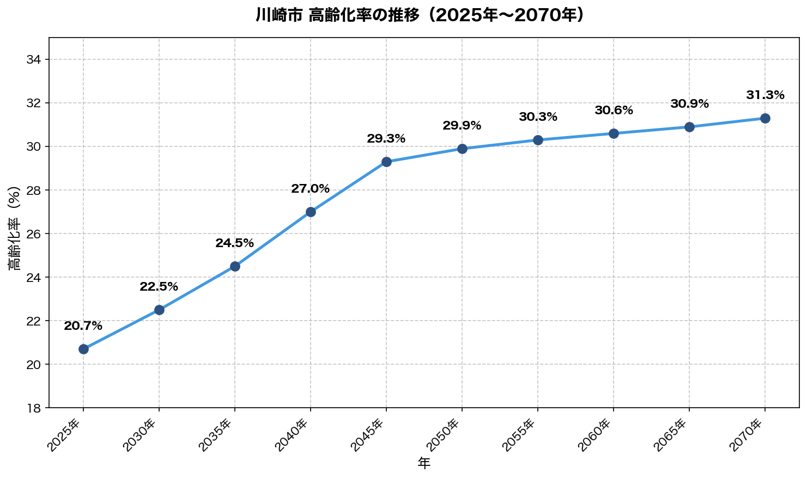

要旨
川崎市におけるAED（自動体外式除細動器）の配置状況を分析し、将来人口推計（2025〜2070年）と年齢別心停止リスクを考慮した最適配置を提案した。
各町丁内に人口が一様に分布していると仮定し、50m間隔のグリッド点ごとにAEDカバー状況（300m圏内）を判定する手法を採用。
分析の結果、現状のカバー率は総人口ベースで96.2%、リスク調整後で95.7%であり、約5.8万人がカバー外であることが判明した。
優先度の高い10地点へのAED設置により、カバー外人口の約51%を新たにカバーし、カバー率を約98%に向上させることが可能である。
目的・背景
本分析は、現状のAED配置を評価し、将来の人口構成変化を見据えた最適配置を提案することを目的とする。
心停止発生から1分経過するごとに救命率は約10%低下し、5分以内の迅速な電気ショックが極めて重要である。
川崎市では救急車の現場到着目標時間を8.4分と定めているが、令和6年2月時点の実績では平均10.2分となっている。さらに、令和7年中の救急出場件数は令和6年に比べて2,043件（2.3%）増加しており、今後も増加傾向が続く可能性が懸念される。
1分でも早く迅速な電気ショックを行うためには、救急車到着までに市民による一次救命処置、特にAEDの使用が救命の鍵を握ると考える。
川崎市では株式会社セブン‐イレブン・ジャパンとのAED設置に関する協定を締結し、コンビニエンスストアへの設置等の施策を推進してAEDの普及が進んでいるが、本提案によりさらなる救命率の向上に貢献できると考える。
現状分析
分析の考え方
心停止から5分以内にAEDを届けるには、約300m以内にAEDがある必要がある。
なお、心停止発生の約7割は住宅（自宅）で起きており、2023年の救急搬送データでは心肺機能停止傷病者のうち住宅で発生したケースが全体の約65%にのぼる。
そこで本分析では「自宅から300m圏内にAEDがあるか」を基準に、川崎市全域のカバー状況を調査した。
AEDデータの収集と統合
川崎市内のAED設置状況を網羅的に把握するため、以下の4つのデータソースを収集・統合した。
- 川崎市オープンデータ「AED設置施設一覧」: 759件（セブン-イレブン設置分208件を含む公式データ）
- 日本救急医療財団「全国AEDマップ」: 667件（全国規模のAED登録データベース）
- 株式会社アルム「日本全国AEDマップ（aedm.jp）」: 2,433件（民間が運営する詳細なAEDマップ）
- セブン-イレブンAED設置店舗リスト: 208件（川崎市との協定に基づく設置店舗）
これらを統合した後、位置情報に基づいて50m以内の重複を除去した結果、市内のAED総数は3,513件となった。
分析手法：一様分布モデル
従来の分析では「町丁単位でAEDがあるか/ないか」という大まかな判定が主流だった。しかし、この方法では町丁の一部だけがカバーされている場合を正確に評価できない。
そこで本分析では、以下の手法を採用した。
- グリッド点の生成: 各町丁の境界データを用いて、町丁内に50m間隔でグリッド点を配置。川崎市全域で70,726点を生成。
- カバー判定: 各グリッド点から最寄りのAEDまでの距離を計算し、300m以内であれば「カバーされている」と判定。結果、22,172点（31.3%）が未カバー。
- 人口の配分: 各町丁の人口をグリッド点に均等に配分し、カバーされている人口を算出。
年齢別リスク加重の導入
心停止は高齢者ほど発生しやすい。東京消防庁のデータによると、75歳以上の心停止発生率は40代の約10倍以上である。
そこで、単純な人口数ではなく「心停止が実際に発生しやすい場所」を重視するため、年齢別にリスクの重み付けを行った。
- 40〜44歳: 1.00（基準）
- 75〜79歳: 11.63（40代の約12倍のリスク）
- 95歳以上: 72.24（40代の約72倍のリスク）
将来人口推計の活用
AEDは設置後長期間にわたって使用されるインフラであり、現在の人口分布のみに基づく配置では将来の高齢化に対応できない。
そこで本分析では、川崎市が提供する町丁別将来人口推計データ（2025年〜2070年、5年ごと10時点）を使用した。

図1: 川崎市 高齢化率の推移（2025年〜2070年）
2025年から2070年にかけて高齢化率は約10ポイント上昇する見込みであり、心停止リスクの増加が予測される。この将来変化を織り込むことで、長期的に有効なAED配置計画の立案が可能となる。
分析結果サマリー
・AED総数: 3,513件
公式データ（川崎市オープンデータ）だけでは759件だが、民間データベースを含めることで約4.6倍のAEDを把握できた。
・総人口ベースカバー率: 96.2%
川崎市民の約96%は、自宅から300m以内にAEDがある環境に住んでいる。
・リスク調整後カバー率: 95.7%
年齢別の心停止リスクで重み付けした場合のカバー率。高齢者が多い地域ほどカバー率が低い傾向。
・カバー外人口: 約5.8万人（リスク調整後）
300m圏内にAEDがない地域に住む人口。この人口が集中している地域が、新規AED設置の優先候補地となる。
具体例：カバー外人口が最も多い地域
カバー外リスク加重人口が最も多い地点は、高津区久末（緯度35.5642, 経度139.6229）である。
この地点を地図で確認すると、典型的な住宅街であることがわかる。

図2: 高津区久末周辺の地図（赤いピンが推奨設置地点）
周囲には商業施設や公共施設が少なく、既存のAED設置場所から離れているため、住民にとって心停止発生時のAEDアクセスが困難な状況にある。このような「住宅街だがAEDが遠い」地域が、本分析で特定された優先設置候補地である。
分析結果：TOP10 AED設置推奨地点
「AEDを1台設置した場合に最も多くの人口をカバーできる地点」を優先度順に算出した。パーセンテージは、カバー外人口（約5.8万人）に対する割合を示す。
| 順位 | 区 | 町丁名 | 座標（緯度, 経度） | カバー率 |
|---|
| 1位 | 高津区 | 久末 | 35.5642, 139.6229 | 12.4% |
| 2位 | 麻生区 | 片平四丁目 | 35.5922, 139.4899 | 5.5% |
| 3位 | 麻生区 | 細山四丁目 | 35.6208, 139.5124 | 4.7% |
| 4位 | 中原区 | 中丸子 | 35.5665, 139.6744 | 4.7% |
| 5位 | 中原区 | 上平間 | 35.5631, 139.6790 | 4.5% |
| 6位 | 宮前区 | 東有馬五丁目 | 35.5697, 139.5987 | 4.3% |
| 7位 | 多摩区 | 菅野戸呂 | 35.6392, 139.5299 | 4.0% |
| 8位 | 麻生区 | 白鳥四丁目 | 35.6065, 139.4860 | 3.8% |
| 9位 | 宮前区 | 土橋七丁目 | 35.5907, 139.5733 | 3.8% |
| 10位 | 宮前区 | 有馬九丁目 | 35.5730, 139.5700 | 3.8% |
※ TOP10地点にAEDを設置すれば、カバー外人口の約51%をカバー可能
現地調査結果
■ コンビニ・スーパー・薬局への設置が容易な地点（3地点）
- 麻生区 細山四丁目: セブン-イレブン、クリエイトSD（薬局）が近隣にあり
- 麻生区 白鳥四丁目: OdakyuOx（スーパー）、ツルハドラッグが近隣にあり
- 宮前区 有馬九丁目: ファミリーマートが近隣にあり
■ 住宅街で商業施設が少ない地点（7地点）
- 高津区 久末: 住宅地+農地。川崎市立久末小学校または町内会館への設置を推奨
- 麻生区 片平四丁目: 住宅地。町内会館・自治会館への設置を推奨
- 中原区 中丸子: 住宅地。町内会館・自治会館への設置を推奨
- 中原区 上平間: 住宅地。町内会館・自治会館への設置を推奨
- 宮前区 東有馬五丁目: 住宅地。町内会館・自治会館への設置を推奨
- 多摩区 菅野戸呂: 住宅地+農地。屋外設置型AEDまたは町内会館への設置を推奨
- 宮前区 土橋七丁目: 住宅地。屋外設置型AEDまたは町内会館への設置を推奨
提案・改善策
本分析の成果
従来のAED配置検討では、「人口が多い地域」「高齢者が多い地域」といった定性的な判断に頼らざるを得なかった。本分析により、以下のことが可能になった。
- 定量的な効果予測: 「この地点にAEDを1台設置すれば、何人の住民が新たにカバーされるか」を数値で示すことができる。例えば、高津区久末への設置でカバー外人口の12.4%を一度にカバーでき、TOP10地点への設置で約51%をカバーできる。
- 優先順位の明確化: 限られた予算の中で「どこから設置すべきか」を客観的データに基づいて判断できる。設置効果の高い地点から順次整備することで、投資対効果を最大化できる。
- 将来を見据えた計画: 2070年までの人口推計を組み込むことで、現時点だけでなく長期的に有効な配置計画を立案できる。
短期施策
■ 商業施設への設置（3地点）
- 麻生区 細山四丁目: セブン-イレブンまたはクリエイトSDへの設置
- 麻生区 白鳥四丁目: OdakyuOxまたはツルハドラッグへの設置
- 宮前区 有馬九丁目: ファミリーマートへの設置
→ 川崎市とセブン-イレブンとの協定の枠組みを活用し、早期設置が期待できる
■ 公共施設・屋外設置型AEDの導入（7地点）
- 高津区 久末: 川崎市立久末小学校または屋外設置型AED
- その他6地点: 町内会館・自治会館への設置、または屋外設置型AEDの導入
→ 商業施設がない住宅街では、24時間アクセス可能な屋外設置型AEDが有効
中長期施策
■ 移動体へのAED搭載
住宅街の「AED空白地帯」を固定設置だけでカバーするには限界がある。そこで、タクシーやコミュニティバスなどの移動体にAEDを搭載することで、広域かつ柔軟なカバーが可能になる。
- タクシー: 24時間運行、GPS位置情報と連携した出動が可能
- コミュニティバス: 定期巡回ルートに沿った面的カバー
■ 定期的な再評価
- 5年ごとに人口推計データを更新し、優先設置地点を再計算
- 新規AED設置状況を反映した分析の継続
期待効果
- 短期施策（TOP10設置）により、カバー外人口の約51%を新たにカバー
- リスク調整後カバー率: 95.7% → 約98%に向上見込み
- 本分析手法は他の自治体にも応用可能であり、川崎市が先進モデルとなりうる